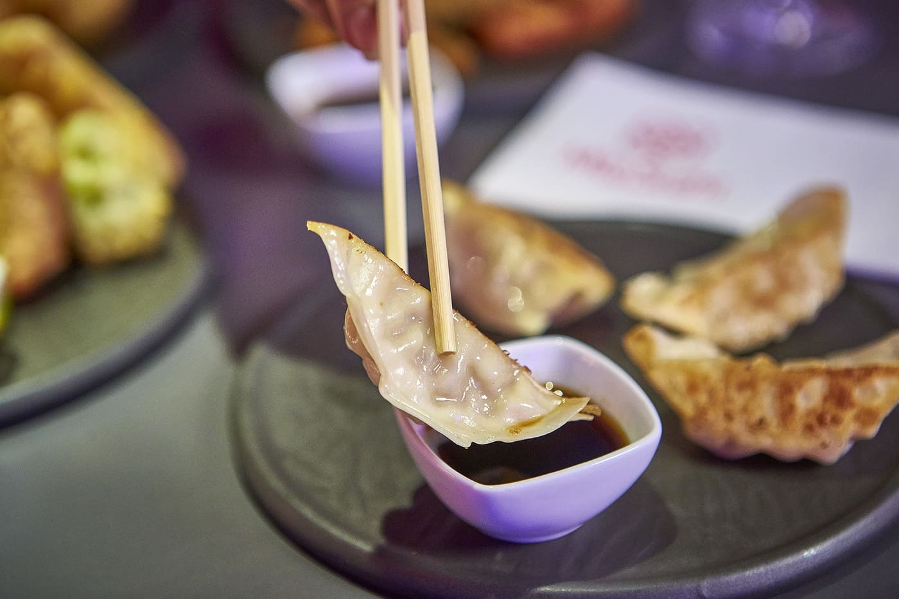

Gyozas

Normalmente las gyozas se elaboran con un interior de carne de pollo, cerdo o ternera y ajo. Bien es cierto que pueden ir acompañadas de algunas verduras como el apio, la zanahoria, la cebolla o la coliflor y obligatoriamente bañadas en salsa de soja.